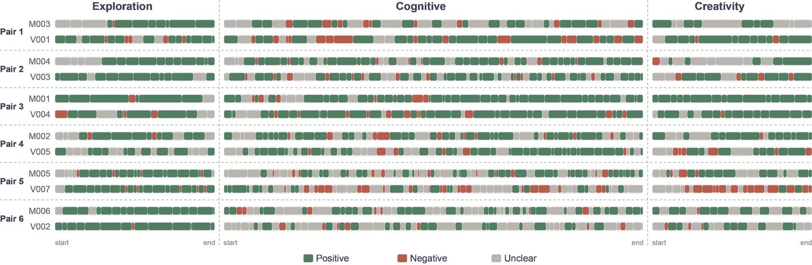

Task Structure Shapes Dyadic Interaction in M-VR for Older Adults with Differing Cognitive Abilities
- Dyadic Interaction
- Multimodal Coding
- Older Adults
- RCT Intervention
- Collaborative VR
Funded by the NIH, this project develops SERVE (Social Engaging Restorative Virtual Environment), a virtual reality (VR) intervention designed to support social engagement, cognitive engagement, and well-being among older adults with mild cognitive impairment (MCI). In this project, we studied how task structure and environmental affordances shape social interaction when older adults with MCI are paired with cognitively healthy volunteers in multiplayer VR. Across six dyads, partners moved through a tutorial, open exploration, collaborative wayfinding, and garden co-creation. Meaning often sits outside the transcript alone: a pause, a pointed controller, or a shift in who leads can change what an utterance does.
We combined reflexive thematic analysis with participant-level multimodal coding of 1,410 episodes (speech, action, engagement focus, pair mode, role, and affect), supported by custom tools for tagging and visualization. Interaction patterns tracked the activity: exploration invited descriptive talk; tightly coupled wayfinding sustained reciprocal coordination; individually operable garden work supported engaged but largely parallel participation. Leadership and assistance moved between partners rather than following cognitive status alone. The work offers design guidance for reciprocal participation and a multimodal observational approach for reading dyadic engagement as it unfolds.